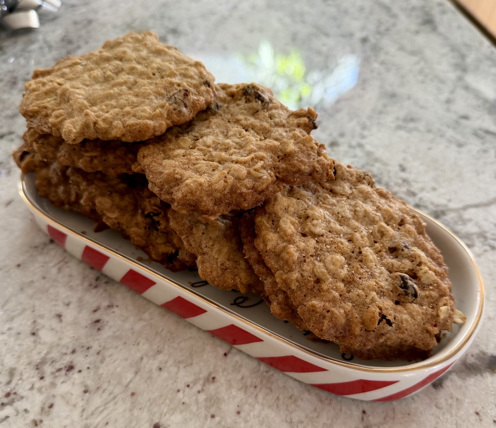

Oatmeal Chocolate Chip Cookies

Crispy, salty, delicious.
Author: Christian Adams
Yield: Makes 3 dozen, 4 pans worth.
Ingredients
- 1 cup / 227 grams (2 sticks) unsalted butter, softened
- 1 cup / 200 grams dark brown sugar, packed
- ⅓ cup / 66 grams granulated sugar
- 2 large eggs
- 1 tablespoon / 15 milliliters vanilla extract
- 1½ cups / 187 grams all-purpose flour
- ¾ teaspoon salt
- 1 teaspoon baking soda
- 1 teaspoon ground cinnamon
- ¼ teaspoon freshly grated nutmeg
- ½ teaspoon ground cardamom
- ½ teaspoon ground ginger
- 2½ cups rolled oats (not instant)
- ½ cup raisins
- ½ cup chopped walnuts
- ½ cup semi-sweet chocolate chips
Directions
- Heat oven to 350 degrees F. Butter two large cookie sheets, or line them with parchment paper or reusable silicone liners.
- Using an electric mixer, beat butter in a large bowl until creamy. Add brown and granulated sugars, then beat until fluffy, about 2 minutes. Beat in eggs, one at a time, until fully incorporated. Then, beat in vanilla extract.
- In a separate bowl, use a wooden spoon or spatula to mix together the flour, salt, baking soda, cinnamon, nutmeg and cardamom.
- Set mixer on low speed, and beat flour mixture into the butter mixture.
- Fold in oats, raisins, walnuts, and chocolate chips.
- Spoon out dough by large tablespoonfuls onto prepared cookie sheets, leaving at least 2 inches between each cookie.
- Bake until cookie edges turn golden brown, about 9 to 13 minutes. Centers will still be quite soft, but they will firm up as the cookies cool. Cool on a wire rack, and optionally grind finishing salt on top. Store in an airtight container at room temperature.
Enjoy!